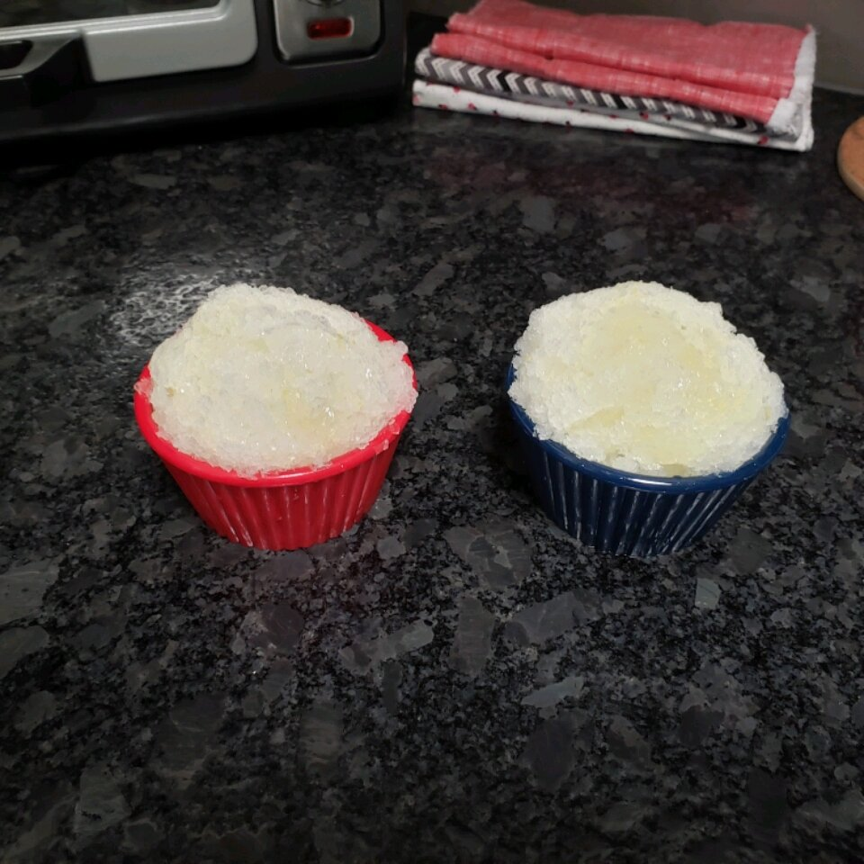

Chef John's Lemon Ice

Description
Using the classic Italian granita technique makes this an easy and refreshing summer treat. I love the contrast between that light texture and bright, vibrant flavor.
Ingredients
- 4 cups cold water
- 7/8 cup white sugar
- 2 tablespoons lemon zest
- 1 cup freshly squeezed lemon juice
- 1 teaspoon lemon extract
Steps
- Dissolve sugar in water in a pot over medium heat, whisking while water heats up. As soon as sugar dissolves and water is clear, remove pan from heat. While water is still warm, add lemon zest. Allow to cool to room temperature before adding lemon juice.
- Whisk in lemon juice and lemon extract. Pour into a baking pan about 9x13 inches. Place in freezer until ice starts to form around the edges, about 40 to 45 minutes. Use a fork to stir up ice. Do this every 20 to 30 minutes until lemon ice reaches your preferred texture, 2 1/2 to 3 hours.